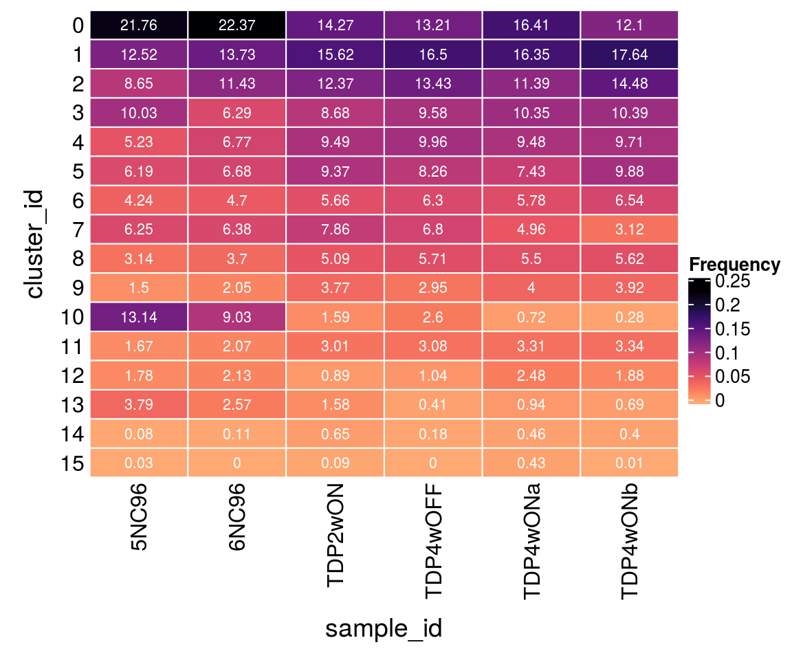
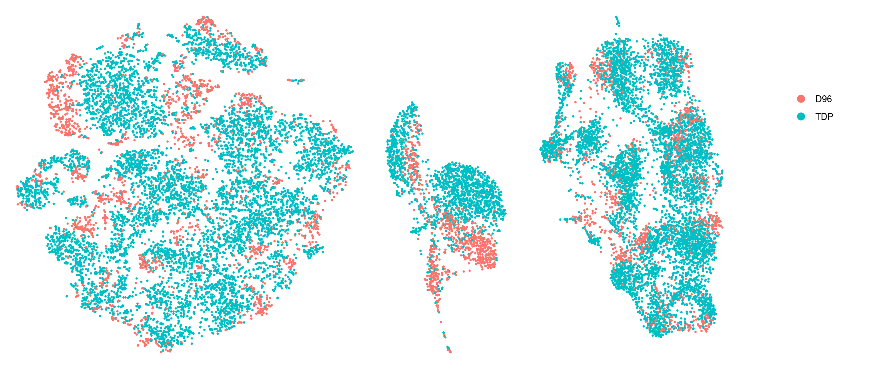
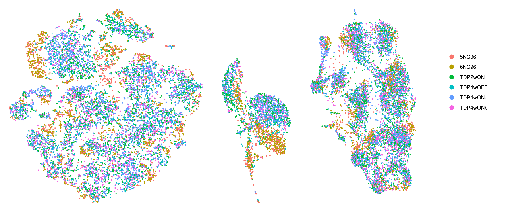
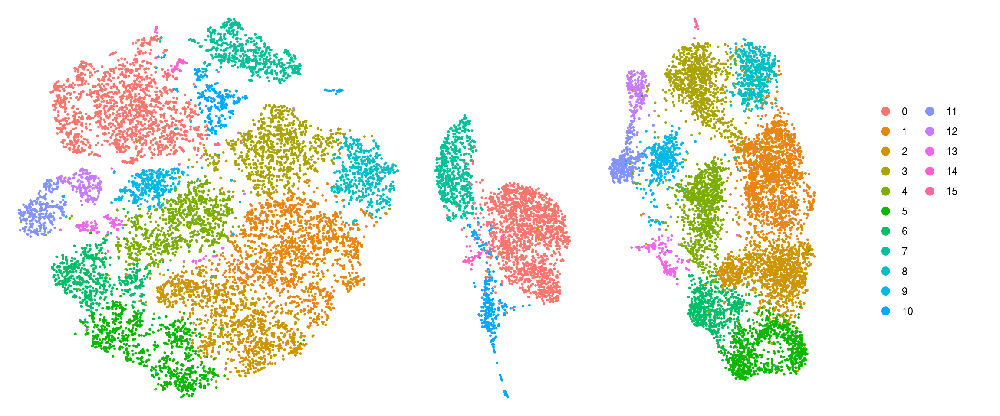
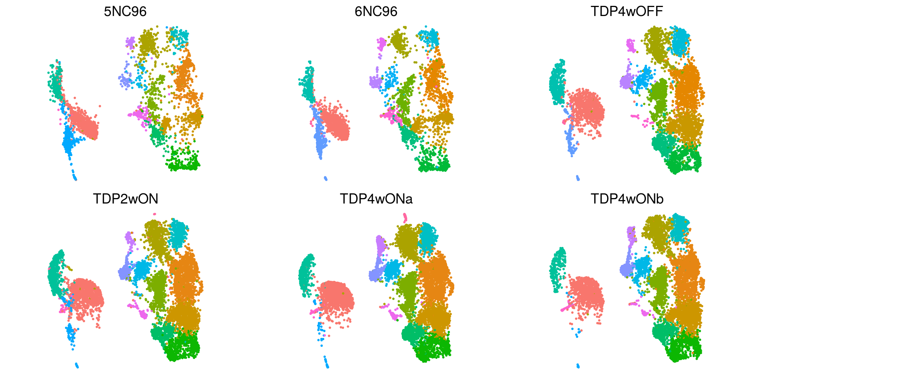
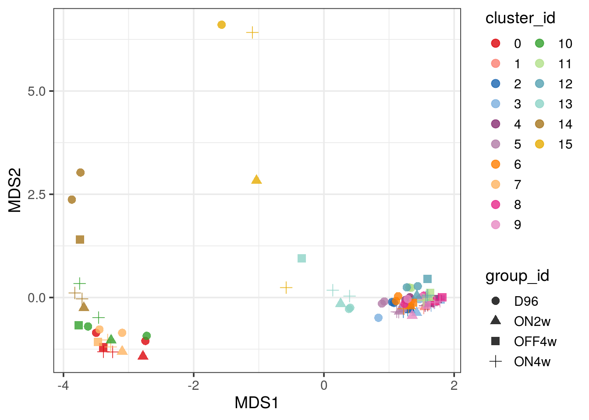

Last updated: 2021-02-25
Checks: 7 0
Knit directory: neural_scRNAseq/
This reproducible R Markdown analysis was created with workflowr (version 1.6.2). The Checks tab describes the reproducibility checks that were applied when the results were created. The Past versions tab lists the development history.
Great! Since the R Markdown file has been committed to the Git repository, you know the exact version of the code that produced these results.
Great job! The global environment was empty. Objects defined in the global environment can affect the analysis in your R Markdown file in unknown ways. For reproduciblity it's best to always run the code in an empty environment.
The command set.seed(20200522) was run prior to running the code in the R Markdown file. Setting a seed ensures that any results that rely on randomness, e.g. subsampling or permutations, are reproducible.
Great job! Recording the operating system, R version, and package versions is critical for reproducibility.
Nice! There were no cached chunks for this analysis, so you can be confident that you successfully produced the results during this run.
Great job! Using relative paths to the files within your workflowr project makes it easier to run your code on other machines.
Great! You are using Git for version control. Tracking code development and connecting the code version to the results is critical for reproducibility.
The results in this page were generated with repository version d8a5aa4. See the Past versions tab to see a history of the changes made to the R Markdown and HTML files.
Note that you need to be careful to ensure that all relevant files for the analysis have been committed to Git prior to generating the results (you can use wflow_publish or wflow_git_commit). workflowr only checks the R Markdown file, but you know if there are other scripts or data files that it depends on. Below is the status of the Git repository when the results were generated:
Ignored files:
Ignored: .DS_Store
Ignored: .Rhistory
Ignored: .Rproj.user/
Ignored: ._.DS_Store
Ignored: ._Rplots.pdf
Ignored: ._Unfiltered.pdf
Ignored: .__workflowr.yml
Ignored: ._coverage.pdf
Ignored: ._coverage_sashimi.pdf
Ignored: ._coverage_sashimi.png
Ignored: ._neural_scRNAseq.Rproj
Ignored: ._sashimi.pdf
Ignored: ._stmn2.pdf
Ignored: ._tdp.pdf
Ignored: analysis/.DS_Store
Ignored: analysis/.Rhistory
Ignored: analysis/._.DS_Store
Ignored: analysis/._01-preprocessing.Rmd
Ignored: analysis/._01-preprocessing.html
Ignored: analysis/._02.1-SampleQC.Rmd
Ignored: analysis/._03-filtering.Rmd
Ignored: analysis/._04-clustering.Rmd
Ignored: analysis/._04-clustering.knit.md
Ignored: analysis/._04.1-cell_cycle.Rmd
Ignored: analysis/._05-annotation.Rmd
Ignored: analysis/._Lam-0-NSC_no_integration.Rmd
Ignored: analysis/._Lam-01-NSC_integration.Rmd
Ignored: analysis/._Lam-02-NSC_annotation.Rmd
Ignored: analysis/._NSC-1-clustering.Rmd
Ignored: analysis/._NSC-2-annotation.Rmd
Ignored: analysis/.__site.yml
Ignored: analysis/._additional_filtering.Rmd
Ignored: analysis/._additional_filtering_clustering.Rmd
Ignored: analysis/._index.Rmd
Ignored: analysis/._organoid-01-1-qualtiy-control.Rmd
Ignored: analysis/._organoid-01-clustering.Rmd
Ignored: analysis/._organoid-02-integration.Rmd
Ignored: analysis/._organoid-03-cluster_analysis.Rmd
Ignored: analysis/._organoid-04-group_integration.Rmd
Ignored: analysis/._organoid-04-stage_integration.Rmd
Ignored: analysis/._organoid-05-group_integration_cluster_analysis.Rmd
Ignored: analysis/._organoid-05-stage_integration_cluster_analysis.Rmd
Ignored: analysis/._organoid-06-1-prepare-sce.Rmd
Ignored: analysis/._organoid-06-conos-analysis-Seurat.Rmd
Ignored: analysis/._organoid-06-conos-analysis-function.Rmd
Ignored: analysis/._organoid-06-conos-analysis.Rmd
Ignored: analysis/._organoid-06-group-integration-conos-analysis.Rmd
Ignored: analysis/._organoid-07-conos-visualization.Rmd
Ignored: analysis/._organoid-07-group-integration-conos-visualization.Rmd
Ignored: analysis/._organoid-08-conos-comparison.Rmd
Ignored: analysis/._organoid-0x-sample_integration.Rmd
Ignored: analysis/01-preprocessing_cache/
Ignored: analysis/02-1-SampleQC_cache/
Ignored: analysis/02-quality_control_cache/
Ignored: analysis/02.1-SampleQC_cache/
Ignored: analysis/03-filtering_cache/
Ignored: analysis/04-clustering_cache/
Ignored: analysis/04.1-cell_cycle_cache/
Ignored: analysis/05-annotation_cache/
Ignored: analysis/06-clustering-all-timepoints_cache/
Ignored: analysis/07-cluster-analysis-all-timepoints_cache/
Ignored: analysis/Lam-01-NSC_integration_cache/
Ignored: analysis/Lam-02-NSC_annotation_cache/
Ignored: analysis/NSC-1-clustering_cache/
Ignored: analysis/NSC-2-annotation_cache/
Ignored: analysis/TDP-01-preprocessing_cache/
Ignored: analysis/TDP-02-quality_control_cache/
Ignored: analysis/TDP-03-filtering_cache/
Ignored: analysis/TDP-04-clustering_cache/
Ignored: analysis/TDP-05-00-filtering-plasmid-QC_cache/
Ignored: analysis/TDP-05-plasmid_expression_cache/
Ignored: analysis/TDP-06-cluster_analysis_cache/
Ignored: analysis/TDP-07-01-STMN2_expression_cache/
Ignored: analysis/TDP-07-cluster_12_cache/
Ignored: analysis/TDP-08-00-clustering-HA-D96_cache/
Ignored: analysis/TDP-08-01-HA-D96-expression-changes_cache/
Ignored: analysis/TDP-08-clustering-timeline-HA_cache/
Ignored: analysis/additional_filtering_cache/
Ignored: analysis/additional_filtering_clustering_cache/
Ignored: analysis/organoid-01-1-qualtiy-control_cache/
Ignored: analysis/organoid-01-clustering_cache/
Ignored: analysis/organoid-02-integration_cache/
Ignored: analysis/organoid-03-cluster_analysis_cache/
Ignored: analysis/organoid-04-group_integration_cache/
Ignored: analysis/organoid-04-stage_integration_cache/
Ignored: analysis/organoid-05-group_integration_cluster_analysis_cache/
Ignored: analysis/organoid-05-stage_integration_cluster_analysis_cache/
Ignored: analysis/organoid-06-conos-analysis_cache/
Ignored: analysis/organoid-06-conos-analysis_test_cache/
Ignored: analysis/organoid-06-group-integration-conos-analysis_cache/
Ignored: analysis/organoid-07-conos-visualization_cache/
Ignored: analysis/organoid-07-group-integration-conos-visualization_cache/
Ignored: analysis/organoid-08-conos-comparison_cache/
Ignored: analysis/organoid-0x-sample_integration_cache/
Ignored: analysis/sample5_QC_cache/
Ignored: analysis/timepoints-01-organoid-integration_cache/
Ignored: data/.DS_Store
Ignored: data/._.DS_Store
Ignored: data/._.smbdeleteAAA17ed8b4b
Ignored: data/._Lam_figure2_markers.R
Ignored: data/._Reactive_astrocytes_markers.xlsx
Ignored: data/._known_NSC_markers.R
Ignored: data/._known_cell_type_markers.R
Ignored: data/._metadata.csv
Ignored: data/._virus_cell_tropism_markers.R
Ignored: data/._~$Reactive_astrocytes_markers.xlsx
Ignored: data/data_sushi/
Ignored: data/filtered_feature_matrices/
Ignored: output/.DS_Store
Ignored: output/._.DS_Store
Ignored: output/._NSC_cluster2_marker_genes.txt
Ignored: output/._TDP-06-no_integration_cluster12_marker_genes.txt
Ignored: output/._TDP-06-no_integration_cluster13_marker_genes.txt
Ignored: output/._organoid_integration_cluster1_marker_genes.txt
Ignored: output/Lam-01-clustering.rds
Ignored: output/NSC_1_clustering.rds
Ignored: output/NSC_cluster1_marker_genes.txt
Ignored: output/NSC_cluster2_marker_genes.txt
Ignored: output/NSC_cluster3_marker_genes.txt
Ignored: output/NSC_cluster4_marker_genes.txt
Ignored: output/NSC_cluster5_marker_genes.txt
Ignored: output/NSC_cluster6_marker_genes.txt
Ignored: output/NSC_cluster7_marker_genes.txt
Ignored: output/TDP-06-no_integration_cluster0_marker_genes.txt
Ignored: output/TDP-06-no_integration_cluster10_marker_genes.txt
Ignored: output/TDP-06-no_integration_cluster11_marker_genes.txt
Ignored: output/TDP-06-no_integration_cluster12_marker_genes.txt
Ignored: output/TDP-06-no_integration_cluster13_marker_genes.txt
Ignored: output/TDP-06-no_integration_cluster14_marker_genes.txt
Ignored: output/TDP-06-no_integration_cluster15_marker_genes.txt
Ignored: output/TDP-06-no_integration_cluster16_marker_genes.txt
Ignored: output/TDP-06-no_integration_cluster17_marker_genes.txt
Ignored: output/TDP-06-no_integration_cluster1_marker_genes.txt
Ignored: output/TDP-06-no_integration_cluster2_marker_genes.txt
Ignored: output/TDP-06-no_integration_cluster3_marker_genes.txt
Ignored: output/TDP-06-no_integration_cluster4_marker_genes.txt
Ignored: output/TDP-06-no_integration_cluster5_marker_genes.txt
Ignored: output/TDP-06-no_integration_cluster6_marker_genes.txt
Ignored: output/TDP-06-no_integration_cluster7_marker_genes.txt
Ignored: output/TDP-06-no_integration_cluster8_marker_genes.txt
Ignored: output/TDP-06-no_integration_cluster9_marker_genes.txt
Ignored: output/TDP-06_scran_markers.rds
Ignored: output/additional_filtering.rds
Ignored: output/conos/
Ignored: output/conos_organoid-06-conos-analysis.rds
Ignored: output/conos_organoid-06-group-integration-conos-analysis.rds
Ignored: output/figures/
Ignored: output/organoid_integration_cluster10_marker_genes.txt
Ignored: output/organoid_integration_cluster11_marker_genes.txt
Ignored: output/organoid_integration_cluster12_marker_genes.txt
Ignored: output/organoid_integration_cluster13_marker_genes.txt
Ignored: output/organoid_integration_cluster14_marker_genes.txt
Ignored: output/organoid_integration_cluster15_marker_genes.txt
Ignored: output/organoid_integration_cluster16_marker_genes.txt
Ignored: output/organoid_integration_cluster17_marker_genes.txt
Ignored: output/organoid_integration_cluster1_marker_genes.txt
Ignored: output/organoid_integration_cluster2_marker_genes.txt
Ignored: output/organoid_integration_cluster3_marker_genes.txt
Ignored: output/organoid_integration_cluster4_marker_genes.txt
Ignored: output/organoid_integration_cluster5_marker_genes.txt
Ignored: output/organoid_integration_cluster6_marker_genes.txt
Ignored: output/organoid_integration_cluster7_marker_genes.txt
Ignored: output/organoid_integration_cluster8_marker_genes.txt
Ignored: output/organoid_integration_cluster9_marker_genes.txt
Ignored: output/sce_01_preprocessing.rds
Ignored: output/sce_02_quality_control.rds
Ignored: output/sce_03_filtering.rds
Ignored: output/sce_03_filtering_all_genes.rds
Ignored: output/sce_06-1-prepare-sce.rds
Ignored: output/sce_TDP_01_preprocessing.rds
Ignored: output/sce_TDP_02_quality_control.rds
Ignored: output/sce_TDP_03_filtering.rds
Ignored: output/sce_TDP_03_filtering_all_genes.rds
Ignored: output/sce_organoid-01-clustering.rds
Ignored: output/sce_preprocessing.rds
Ignored: output/so_04-group_integration.rds
Ignored: output/so_04-stage_integration.rds
Ignored: output/so_04_1_cell_cycle.rds
Ignored: output/so_04_clustering.rds
Ignored: output/so_06-clustering_all_timepoints.rds
Ignored: output/so_08-00_clustering_HA_D96.rds
Ignored: output/so_08-clustering_timeline_HA.rds
Ignored: output/so_0x-sample_integration.rds
Ignored: output/so_TDP-06-cluster-analysis.rds
Ignored: output/so_TDP_04_clustering.rds
Ignored: output/so_TDP_05_plasmid_expression.rds
Ignored: output/so_additional_filtering_clustering.rds
Ignored: output/so_integrated_organoid-02-integration.rds
Ignored: output/so_merged_organoid-02-integration.rds
Ignored: output/so_organoid-01-clustering.rds
Ignored: output/so_sample_organoid-01-clustering.rds
Ignored: scripts/.DS_Store
Ignored: scripts/._.DS_Store
Ignored: scripts/._bu_Rcode.R
Ignored: scripts/._plasmid_expression.sh
Untracked files:
Untracked: Filtered.pdf
Untracked: Rplots.pdf
Untracked: Unfiltered
Untracked: Unfiltered.pdf
Untracked: analysis/Lam-0-NSC_no_integration.Rmd
Untracked: analysis/TDP-07-01-STMN2_expression copy.Rmd
Untracked: analysis/additional_filtering.Rmd
Untracked: analysis/additional_filtering_clustering.Rmd
Untracked: analysis/organoid-01-1-qualtiy-control.Rmd
Untracked: analysis/organoid-06-conos-analysis-Seurat.Rmd
Untracked: analysis/organoid-06-conos-analysis-function.Rmd
Untracked: analysis/organoid-07-conos-visualization.Rmd
Untracked: analysis/organoid-07-group-integration-conos-visualization.Rmd
Untracked: analysis/organoid-08-conos-comparison.Rmd
Untracked: analysis/organoid-0x-sample_integration.Rmd
Untracked: analysis/sample5_QC.Rmd
Untracked: ce$id <- sce$sample_id
Untracked: coverage.pdf
Untracked: coverage_sashimi.pdf
Untracked: coverage_sashimi.png
Untracked: data/Homo_sapiens.GRCh38.98.sorted.gtf
Untracked: data/Kanton_et_al/
Untracked: data/Lam_et_al/
Untracked: data/Sep2020/
Untracked: data/reference/
Untracked: data/virus_cell_tropism_markers.R
Untracked: data/~$Reactive_astrocytes_markers.xlsx
Untracked: sashimi.pdf
Untracked: scripts/bu_Rcode.R
Untracked: scripts/salmon-latest_linux_x86_64/
Untracked: stmn2.pdf
Untracked: tdp.pdf
Unstaged changes:
Modified: analysis/05-annotation.Rmd
Modified: analysis/Lam-02-NSC_annotation.Rmd
Modified: analysis/TDP-04-clustering.Rmd
Modified: analysis/TDP-06-cluster_analysis.Rmd
Modified: analysis/_site.yml
Modified: analysis/organoid-02-integration.Rmd
Modified: analysis/organoid-04-group_integration.Rmd
Modified: analysis/organoid-06-conos-analysis.Rmd
Modified: analysis/timepoints-01-organoid-integration.Rmd
Note that any generated files, e.g. HTML, png, CSS, etc., are not included in this status report because it is ok for generated content to have uncommitted changes.
These are the previous versions of the repository in which changes were made to the R Markdown (analysis/TDP-08-01-HA-D96-expression-changes.Rmd) and HTML (docs/TDP-08-01-HA-D96-expression-changes.html) files. If you've configured a remote Git repository (see ?wflow_git_remote), click on the hyperlinks in the table below to view the files as they were in that past version.
| File | Version | Author | Date | Message |
|---|---|---|---|---|
| Rmd | d8a5aa4 | khembach | 2021-02-25 | differential analysis of effect of TDP-HA expression in culture |
library(Seurat)
library(SingleCellExperiment)
library(dplyr)
library(scran)
library(Seurat)
library(ComplexHeatmap)
library(cowplot)
library(ggplot2)
library(muscat)
library(purrr)
library(RColorBrewer)
library(viridis)
library(edgeR)so <- readRDS(file.path("output", "so_08-00_clustering_HA_D96.rds"))
sce <- as.SingleCellExperiment(so, assay = "RNA")
colData(sce) <- as.data.frame(colData(sce)) %>%
mutate_if(is.character, as.factor) %>%
DataFrame(row.names = colnames(sce))# set cluster IDs to resolution 0.4 clustering
so <- SetIdent(so, value = "RNA_snn_res.0.4")
so@meta.data$cluster_id <- Idents(so)
sce$cluster_id <- Idents(so)
(n_cells <- table(sce$cluster_id, sce$sample_id))
5NC96 6NC96 TDP2wON TDP4wOFF TDP4wONa TDP4wONb
0 770 1028 1057 803 1586 934
1 443 631 1157 1003 1580 1362
2 306 525 916 816 1101 1118
3 355 289 643 582 1000 802
4 185 311 703 605 916 750
5 219 307 694 502 718 763
6 150 216 419 383 559 505
7 221 293 582 413 479 241
8 111 170 377 347 532 434
9 53 94 279 179 387 303
10 465 415 118 158 70 22
11 59 95 223 187 320 258
12 63 98 66 63 240 145
13 134 118 117 25 91 53
14 3 5 48 11 44 31
15 1 0 7 0 42 1How are the samples distributed across clusters?
fqs <- prop.table(n_cells, margin = 2)
mat <- as.matrix(unclass(fqs))
Heatmap(mat,
col = rev(magma(12))[-c(1,2)],
name = "Frequency",
cluster_rows = FALSE,
cluster_columns = FALSE,
row_names_side = "left",
row_title = "cluster_id",
column_title = "sample_id",
column_title_side = "bottom",
rect_gp = gpar(col = "white"),
cell_fun = function(i, j, x, y, width, height, fill)
grid.text(round(mat[j, i] * 100, 2), x = x, y = y,
gp = gpar(col = "white", fontsize = 8)))
cs <- sample(colnames(so), 1e4)
.plot_dr <- function(so, dr, id)
DimPlot(so, cells = cs, group.by = id, reduction = dr, pt.size = 0.4) +
guides(col = guide_legend(nrow = 11,
override.aes = list(size = 3, alpha = 1))) +
theme_void() + theme(aspect.ratio = 1)
ids <- c("group_id", "sample_id", "ident")
for (id in ids) {
cat("## ", id, "\n")
p1 <- .plot_dr(so, "tsne", id)
lgd <- get_legend(p1)
p1 <- p1 + theme(legend.position = "none")
p2 <- .plot_dr(so, "umap", id) + theme(legend.position = "none")
ps <- plot_grid(plotlist = list(p1, p2), nrow = 1)
p <- plot_grid(ps, lgd, nrow = 1, rel_widths = c(1, 0.2))
print(p)
cat("\n\n")
}


To better see how the cells from different clusters overlap, we only plot the cells from one samples at a time.
.plot_dr <- function(so, dr, id, cs) {
DimPlot(so, cells = cs, group.by = id, reduction = dr, pt.size = 0.4, cols = ) +
guides(col = guide_legend(nrow = 11,
override.aes = list(size = 3, alpha = 1))) +
theme_void() + theme(aspect.ratio = 1) +
theme(plot.title = element_text(hjust = 0.5))}
# ids <- unique(so$sample_id)
p1 <- .plot_dr(so, "umap", "ident", colnames(so[,so$sample_id == "5NC96"])) +
theme(legend.position = "none") + ggtitle("5NC96")
p2 <- .plot_dr(so, "umap", "ident", colnames(so[,so$sample_id == "6NC96"])) +
theme(legend.position = "none") + ggtitle("6NC96")
p3 <- .plot_dr(so, "umap", "ident", colnames(so[,so$sample_id == "TDP4wOFF"])) +
theme(legend.position = "none") + ggtitle("TDP4wOFF")
p4 <- .plot_dr(so, "umap", "ident", colnames(so[,so$sample_id == "TDP2wON"])) +
theme(legend.position = "none") + ggtitle("TDP2wON")
p5 <- .plot_dr(so, "umap", "ident", colnames(so[,so$sample_id == "TDP4wONa"])) +
theme(legend.position = "none") + ggtitle("TDP4wONa")
p6 <- .plot_dr(so, "umap", "ident", colnames(so[,so$sample_id == "TDP4wONb"])) +
theme(legend.position = "none") + ggtitle("TDP4wONb")
ps <- plot_grid(plotlist = list(p1, p2, p3, p4, p5, p6), nrow = 2)
lgd <- get_legend(p5)
p <- plot_grid(ps, lgd, nrow = 1, rel_widths = c(1, 0.2))
p
We want to test for differences in gene expression between cells from D96 samples and the TDP-HA expressing samples. We test for differences in the neuronal cells (right cell cloud in UMAP).
We filter and only keep cells from D96 and 4wON.
## TODO subset cells
sce$id <- sce$sample_id
levels(sce$id) <- c("D96", "D96", "ON2w", "OFF4w", "ON4w", "ON4w")
(sce <- prepSCE(sce,
kid = "cluster_id", # subpopulation assignments
gid = "id", # group IDs (ctrl/stim)
sid = "sample_id", # sample IDs (ctrl/stim.1234)
drop = FALSE)) # drop all other colData columnsclass: SingleCellExperiment
dim: 14073 39003
metadata(1): experiment_info
assays(2): counts logcounts
rownames(14073): ENSG00000187634.SAMD11 ENSG00000188976.NOC2L ...
ENSG00000227234.SPANXB1 ENSG00000198573.SPANXC
rowData names(5): vst.mean vst.variance vst.variance.expected
vst.variance.standardized vst.variable
colnames(39003): tdp_ha_AAACCCACATGTCTAG-1.TDP2wON
tdp_ha_AAACCCATCACGTAGT-1.TDP2wON ... D96_TTTGTTGCACTCGATA-1.6NC96
D96_TTTGTTGTCGTGTGAT-1.6NC96
colData names(44): cluster_id sample_id ... integrated_snn_res.2 ident
reducedDimNames(3): PCA TSNE UMAP
altExpNames(0):nk <- length(kids <- levels(sce$cluster_id))
ns <- length(sids <- levels(sce$sample_id))
names(kids) <- kids; names(sids) <- sids
# nb. of cells per cluster-sample
t(table(sce$cluster_id, sce$sample_id))
0 1 2 3 4 5 6 7 8 9 10 11 12
5NC96 770 443 306 355 185 219 150 221 111 53 465 59 63
6NC96 1028 631 525 289 311 307 216 293 170 94 415 95 98
TDP2wON 1057 1157 916 643 703 694 419 582 377 279 118 223 66
TDP4wOFF 803 1003 816 582 605 502 383 413 347 179 158 187 63
TDP4wONa 1586 1580 1101 1000 916 718 559 479 532 387 70 320 240
TDP4wONb 934 1362 1118 802 750 763 505 241 434 303 22 258 145
13 14 15
5NC96 134 3 1
6NC96 118 5 0
TDP2wON 117 48 7
TDP4wOFF 25 11 0
TDP4wONa 91 44 42
TDP4wONb 53 31 1We sum the gene counts per cluster
pb <- aggregateData(sce, assay = "counts", by = c("cluster_id", "sample_id"),
fun = "sum")
# one sheet per subpopulation = cluster
assayNames(pb) [1] "0" "1" "2" "3" "4" "5" "6" "7" "8" "9" "10" "11" "12" "13" "14"
[16] "15"# pseudobulks for 1st cluster
t(head(assay(pb))) ENSG00000187634.SAMD11 ENSG00000188976.NOC2L ENSG00000187961.KLHL17
5NC96 125 286 79
6NC96 179 400 106
TDP2wON 85 475 104
TDP4wOFF 80 328 77
TDP4wONa 105 416 109
TDP4wONb 84 362 78
ENSG00000188290.HES4 ENSG00000187608.ISG15 ENSG00000188157.AGRN
5NC96 3784 641 985
6NC96 6195 897 1442
TDP2wON 8591 2656 1345
TDP4wOFF 5736 860 999
TDP4wONa 12971 2232 1804
TDP4wONb 8302 1522 1253(pb_mds <- pbMDS(pb))
# # run DS analysis
# res <- pbDS(pb, verbose = FALSE)
# # access results table for 1st comparison
# tbl <- res$table[[1]]
# # one data.frame per cluster
# names(tbl)
#
# # view results for 1st cluster
# k1 <- tbl[[1]]
# head(format(k1[, -ncol(k1)], digits = 2))# Creating up a DGEList object for use in edgeR:
# y <- DGEList(counts(current), samples=colData(current))
# y
sessionInfo()R version 4.0.0 (2020-04-24)
Platform: x86_64-pc-linux-gnu (64-bit)
Running under: Ubuntu 16.04.6 LTS
Matrix products: default
BLAS: /usr/local/R/R-4.0.0/lib/libRblas.so
LAPACK: /usr/local/R/R-4.0.0/lib/libRlapack.so
locale:
[1] LC_CTYPE=en_US.UTF-8 LC_NUMERIC=C
[3] LC_TIME=en_US.UTF-8 LC_COLLATE=en_US.UTF-8
[5] LC_MONETARY=en_US.UTF-8 LC_MESSAGES=en_US.UTF-8
[7] LC_PAPER=en_US.UTF-8 LC_NAME=C
[9] LC_ADDRESS=C LC_TELEPHONE=C
[11] LC_MEASUREMENT=en_US.UTF-8 LC_IDENTIFICATION=C
attached base packages:
[1] grid parallel stats4 stats graphics grDevices utils
[8] datasets methods base
other attached packages:
[1] edgeR_3.30.3 limma_3.44.3
[3] viridis_0.5.1 viridisLite_0.3.0
[5] RColorBrewer_1.1-2 purrr_0.3.4
[7] muscat_1.2.1 ggplot2_3.3.2
[9] cowplot_1.0.0 ComplexHeatmap_2.4.2
[11] scran_1.16.0 dplyr_1.0.2
[13] SingleCellExperiment_1.10.1 SummarizedExperiment_1.18.1
[15] DelayedArray_0.14.0 matrixStats_0.56.0
[17] Biobase_2.48.0 GenomicRanges_1.40.0
[19] GenomeInfoDb_1.24.2 IRanges_2.22.2
[21] S4Vectors_0.26.1 BiocGenerics_0.34.0
[23] Seurat_3.1.5 workflowr_1.6.2
loaded via a namespace (and not attached):
[1] reticulate_1.16 tidyselect_1.1.0
[3] lme4_1.1-23 RSQLite_2.2.0
[5] AnnotationDbi_1.50.1 htmlwidgets_1.5.1
[7] BiocParallel_1.22.0 Rtsne_0.15
[9] munsell_0.5.0 codetools_0.2-16
[11] ica_1.0-2 statmod_1.4.34
[13] future_1.17.0 withr_2.2.0
[15] colorspace_1.4-1 knitr_1.29
[17] ROCR_1.0-11 listenv_0.8.0
[19] labeling_0.3 git2r_0.27.1
[21] GenomeInfoDbData_1.2.3 farver_2.0.3
[23] bit64_0.9-7 glmmTMB_1.0.2.1
[25] rprojroot_1.3-2 vctrs_0.3.4
[27] generics_0.0.2 xfun_0.15
[29] R6_2.4.1 doParallel_1.0.15
[31] ggbeeswarm_0.6.0 clue_0.3-57
[33] rsvd_1.0.3 locfit_1.5-9.4
[35] bitops_1.0-6 promises_1.1.1
[37] scales_1.1.1 beeswarm_0.2.3
[39] gtable_0.3.0 globals_0.12.5
[41] rlang_0.4.7 genefilter_1.70.0
[43] GlobalOptions_0.1.2 splines_4.0.0
[45] TMB_1.7.16 lazyeval_0.2.2
[47] yaml_2.2.1 reshape2_1.4.4
[49] backports_1.1.9 httpuv_1.5.4
[51] tools_4.0.0 ellipsis_0.3.1
[53] gplots_3.0.4 ggridges_0.5.2
[55] Rcpp_1.0.5 plyr_1.8.6
[57] progress_1.2.2 zlibbioc_1.34.0
[59] RCurl_1.98-1.2 prettyunits_1.1.1
[61] pbapply_1.4-2 GetoptLong_1.0.1
[63] zoo_1.8-8 ggrepel_0.8.2
[65] cluster_2.1.0 colorRamps_2.3
[67] fs_1.4.2 variancePartition_1.18.2
[69] magrittr_1.5 data.table_1.12.8
[71] lmerTest_3.1-2 circlize_0.4.10
[73] lmtest_0.9-37 RANN_2.6.1
[75] whisker_0.4 fitdistrplus_1.1-1
[77] hms_0.5.3 patchwork_1.0.1
[79] evaluate_0.14 xtable_1.8-4
[81] pbkrtest_0.4-8.6 XML_3.99-0.4
[83] gridExtra_2.3 shape_1.4.4
[85] compiler_4.0.0 scater_1.16.2
[87] tibble_3.0.3 KernSmooth_2.23-17
[89] crayon_1.3.4 minqa_1.2.4
[91] htmltools_0.5.0 later_1.1.0.1
[93] tidyr_1.1.0 geneplotter_1.66.0
[95] DBI_1.1.0 MASS_7.3-51.6
[97] rappdirs_0.3.1 boot_1.3-25
[99] Matrix_1.2-18 gdata_2.18.0
[101] igraph_1.2.5 pkgconfig_2.0.3
[103] numDeriv_2016.8-1.1 plotly_4.9.2.1
[105] foreach_1.5.0 annotate_1.66.0
[107] vipor_0.4.5 dqrng_0.2.1
[109] blme_1.0-4 XVector_0.28.0
[111] stringr_1.4.0 digest_0.6.25
[113] sctransform_0.2.1 RcppAnnoy_0.0.16
[115] tsne_0.1-3 rmarkdown_2.3
[117] leiden_0.3.3 uwot_0.1.8
[119] DelayedMatrixStats_1.10.1 gtools_3.8.2
[121] rjson_0.2.20 nloptr_1.2.2.2
[123] lifecycle_0.2.0 nlme_3.1-148
[125] jsonlite_1.7.0 BiocNeighbors_1.6.0
[127] pillar_1.4.6 lattice_0.20-41
[129] httr_1.4.1 survival_3.2-3
[131] glue_1.4.2 png_0.1-7
[133] iterators_1.0.12 bit_1.1-15.2
[135] stringi_1.4.6 blob_1.2.1
[137] DESeq2_1.28.1 BiocSingular_1.4.0
[139] caTools_1.18.0 memoise_1.1.0
[141] irlba_2.3.3 future.apply_1.6.0
[143] ape_5.4